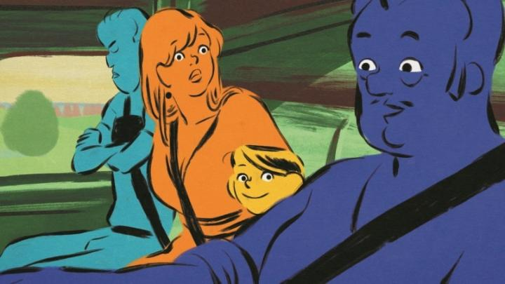

I remember reading previews early about "Chicken for Linda!," the follow-up film by Sebastien Laundenback, who I know from the feature film "The Girl Without Hands." In 2023, I even came across articles suggesting it should be in the discussion for awards consideration. Really? This? Out of curiosity rather than excitement, it was one of my more anticpated films of the year, and I finally got to see it thanks to OIAF in Ottawa. And to my surprise, even I think it should be in the discussion for awards season. Seriously. The plot for this family-friendly comedy starts out simply enough, but with a human realism for depth. Linda is a young child of a single mother, after her father passes away years earlier. Linda and her mother have a loving relationship, but the mother's hard-working and easily stressed, while Linda is mischievous and rambunctious as any girl her age would be. After a prolonged dispute over a missing ring, the mother wants to apologize for accusing Linda, and asks what she wants. "Chicken with peppers!" Linda says, referring to the simple but aromatic dish her father used to make. With sympathy, the mother agrees... except all the stores have shut down due to a workers' strike in France (not unlike the situation of home-lockdown during the 2020 pandemic, but that's just a coincidence, of course). What follows is a grounded, but increasingly absurd, adventure to obtain a chicken to fullfill this request. Having come from "Girl Without Hands," I was worried about how cruel and raw this "family movie" might be. And some scenes get close to that, particularly when discussing getting a live chicken with the intent of butchering it in their apartment kitchen. But for the most part, it's all perfectly family friendly and lighthearted. And surprisingly funny! I think the secret to this is Linda herself, and the choice to put much of the film's context from her perspective, and those of her classmates who get wrapped up in the neighbourhood chaos of making dinner. I was genuinely laughing, and when the film gets through from the other end of the madness, it manages to wrap up a neat little ending that's spot on. Visually, this will look similar to Laundenback's other work, with abstract black painted outlines around single-coloured characters and painterly backgrounds. It's still unique, and here, the simplicitly feels appropriate for a children's movie, while still managing to portray personalities in the characters. The music score is upbeat and fits to the zanny context of the scenes. The one point of confusion I had was the inserted musical numbers... the songs are fine, but they seemed unnecessary and out of place, as there weren't enough to label the entire film as a musical.  "Chicken for Linda!" is a genuine treat and surprise from 2023. It's great to recommend to kids willing to expand their horizons to things not made by Disney, and adults will probably laugh just as much as their children do.
- "Ani" More reviews can be found at : https://2danicritic.github.io/ Previous review: review_Cats_Don't_Dance Next review: review_Chico_and_Rita